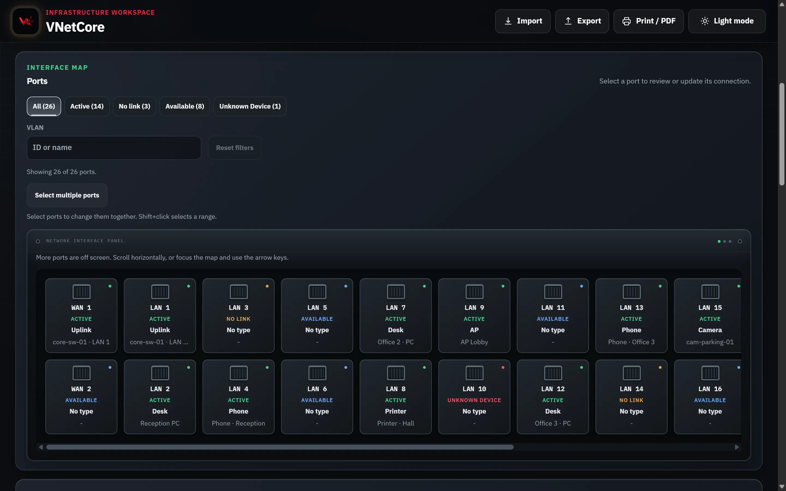
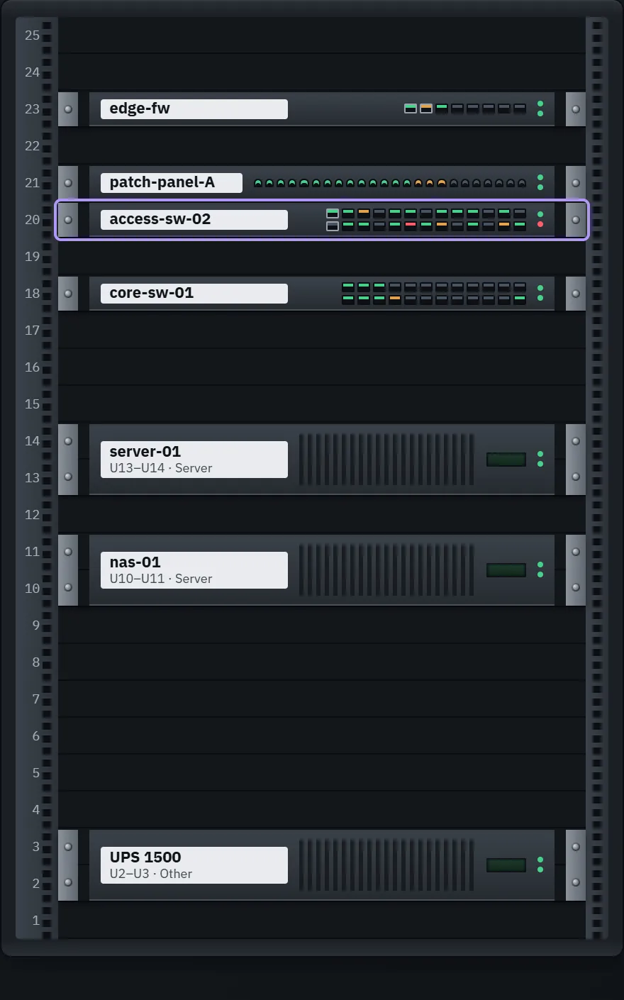
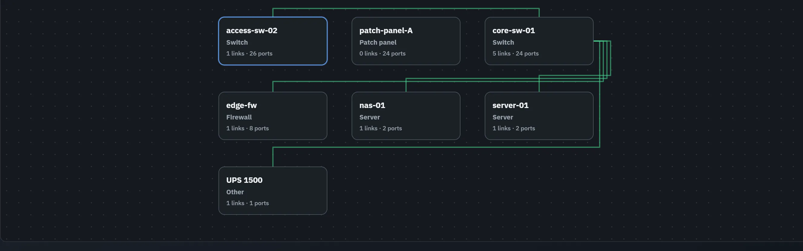

Network notes, for people who run the cables
Know what's plugged into port 17.
VNetCore is a small tool for writing down your network: every device, every port, every cable and where it goes. It runs in your browser and keeps everything on your computer. Nothing to sign up for.
The demo opens a filled-in clinic network as a separate project, so your own work is never touched. Already have a spreadsheet? Import it as CSV or JSON.
- VLAN
- 20 · Cameras
- Goes to
- cam-lobby-01 / eth0
- IP
- 10.20.0.41
- Notes
- Ceiling, blue patch cable
Your network shouldn't live in one person's head.
Spreadsheets go stale and patch panel photos get lost. VNetCore gives that knowledge a place, so the next person, or you in six months, can find it.
This is the actual workspace
Screenshots from VNetCore with a small clinic network filled in. Nothing here is a mock-up. Select one to see it full size.





What you can do with it
-
Ports
A map of every port
Mark each port as active, no link, available or unknown. Add the VLAN, IP, destination and a note. Drag one port onto another to move its data, or select several and change them together.
-
Links
Who connects to whom
Link two ports and both ends stay in sync. The connection map shows every device and highlights both sides of a cable when you pick it.
-
Racks
A front view of your racks
Place devices by unit and height, drag them around, and spot overlaps. Switches and patch panels show their real port status.
-
Checks
It notices the mess
Repeated IPs, the same MAC or serial on two devices, links with a missing end, ports marked active with nothing documented. You decide what to fix.
-
Print
A report for the binder
Print a PDF with every device and every port field, for the folder that lives in the server room.
-
Offline
Works without internet
Once it has loaded, it opens without a connection. Handy in a basement closet with no signal.
No database · No account · No server
Your project is yours, and it stays here
VNetCore has no backend. Nothing you type leaves your computer, and the page makes no requests to anyone else, not even for fonts.
Where it's saved
- In this browser, on this device
- The previous version is kept before every save
- Undo covers the last ten changes
- Data it can't read is set aside for recovery, never overwritten
Moving it around
- JSON is the complete backup
- CSV opens in any spreadsheet
- Imports show a summary before replacing anything
- Starting from a spreadsheet? Get the CSV template in Import → Format guide & templates
How to back up
- Open Export and choose Export JSON.
- Keep the file somewhere safe: a USB drive, a shared folder.
- To restore, use Import → Import JSON, check the summary and confirm.
Clearing your browser's site data deletes your projects, so export a copy now and then. And don't store passwords or keys in it.
Getting started takes a minute
-
1
Open VNetCore. A blank project is waiting.
-
2
Add a device: give it a name and how many ports it has.
-
3
Click a port and write down what's on the other end.